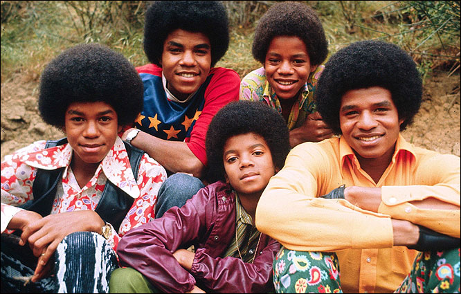

Michael Joseph Jackson born on August 29, 1958 and died June 25, 2009 was an American singer, songwriter, dancer, and philanthropist. The eighth child of the Jackson family, Jackson made his public debut in 1964 with his older brothers Jackie, Tito, Jermaine, and Marlon as a member of the Jackson 5

Jackson released 10 studio albums, 3 soundtrack albums, 1 live album, 39 compilation albums, 10 video albums and 8 remix albums. Since his death, 2 albums of unreleased tracks have been posthumously released.
In 1972, Jackson released his debut studio album Got to Be There through Motown Records, while still part of The Jackson 5. It peaked at number 14 on the US Billboard Top LP & Tapeschart
The same year, he released another album, Ben, which peaked at number five on the Billboard Top LP & Tapes chart and was certified Silver by the British Phonographic Industry.
In 1975, Jackson signed to Epic Records, and released his fifth studio album, Off the Wall, in 1979. It peaked at number three on the Billboard Top LPs & Tapes chart and spawned two number-one singles on the US Billboard Hot 100.
Jackson's sixth studio album, Thriller, was released in 1982. It became his first number one album on the Billboard Top LPs & Tapes chart. Thriller spent a record 37 non-consecutive weeks at number one, from February 26, 1983, to April 14, 1984.
In 1987, Jackson released his seventh studio album, Bad. It debuted at number one on the Billboard Top Pop Albums chart in the US. Seven singles charted in the top 20 of the Billboard Hot 100, a certification of 11 Platinum by the RIAA
Jackson entered the 1990s with the release of his eighth studio album, Dangerous,in 1991.Dangerous debuted at number one on the U.S. Billboard Top Pop Albums chart. Dangerous was certified 8 Platinum by the RIAA
Jackson's ninth studio album HIStory (1995) debuted at number one on the U.S. Billboard 200. The album was certified 8 Platinum by the RIAA
Jackson's tenth and final studio album, Invincible, was released in 2001.Invincible debuted at number one on the Billboard 200 albums chart. It was certified double platinum in the US January 2002